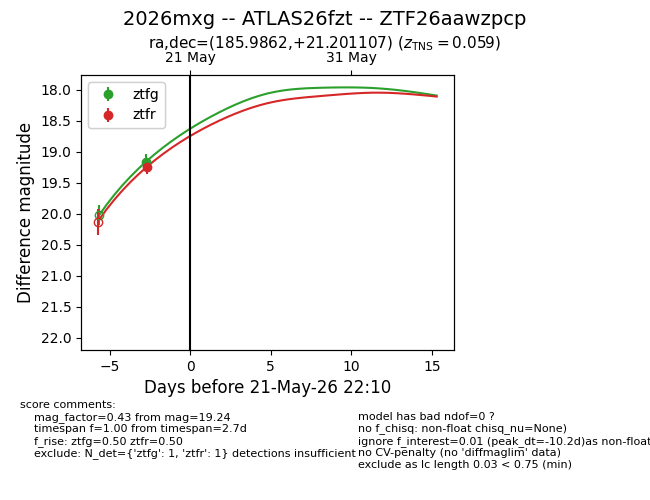
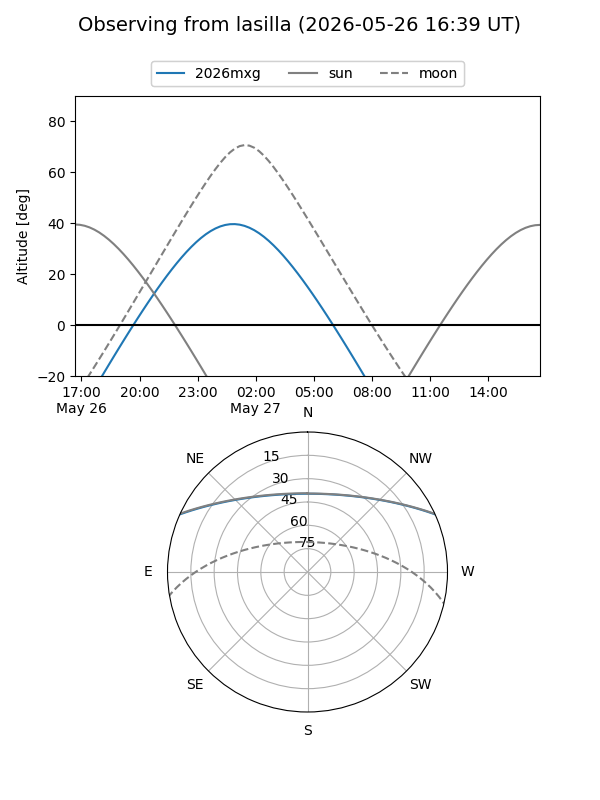
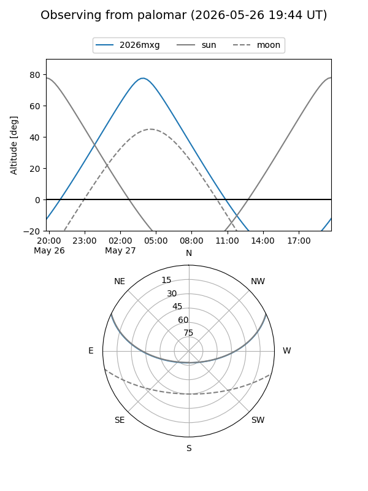
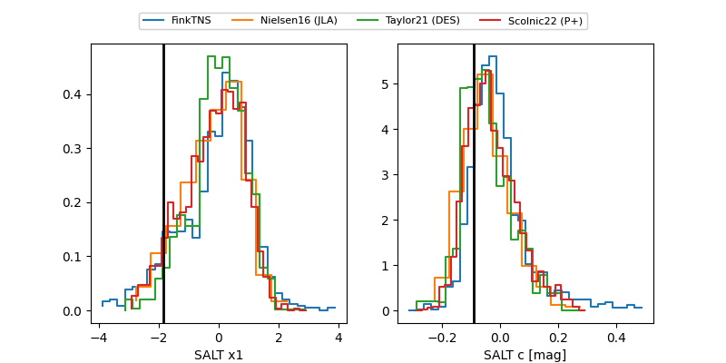

2026mxg
Target 2026mxg at 2026-05-21 22:11
Aliases and brokers:
lsst-FINK: link
lsst-Lasair: link
lsst-ALeRCE: link
ztf-FINK: link
ztf-Lasair: link
ztf-ALeRCE: link
TNS: link
YSE: link
alt names
ZTF26aawzpcp (ztf,fink_ztf)
2026mxg (tns,yse)
ATLAS26fzt (atlas)
Coordinates:
equatorial (ra, dec) = 185.9862,+21.20111
equatorial (HMS+DMS) = 12:23:56.68,+21:12:03.99
galactic (l, b) = (254.8600,+81.37490)
Flags:
confirmed ia: True
TNS confirmed: SN Ia
TNS redshift: 0.059
Photometry:
last ztfg=19.16, ztfr=19.24
1 ztfg, 1 ztfr detections
Lightcurve

Visibility


Additional plots
